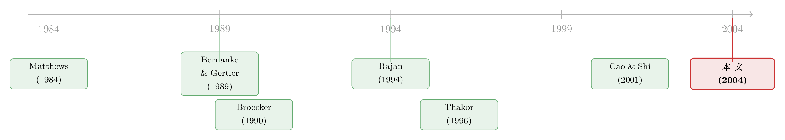

好年景里，银行为什么集体『放水』？——把信贷标准的周期写进一场拍卖
本文读的是 Ruckes (2004, Review of Financial Studies)：银行评估借款人的「筛选强度」随经济前景呈一条倒 U 形曲线——前景极差和极好时都懒得筛，只在不上不下时才下力气。于是好年景筛得松、价格战打得凶、信贷标准一路滑坡；坏年景同样筛得松，但银行干脆惜贷、标准骤然收紧。信贷标准的逆周期，根子不在借款人那一侧，而在银行自己的信息生产。而存款保险，恰恰是把这条曲线在繁荣期推得更危险的那只手。
1 一个让格林斯潘两头操心的现象
先看一段几乎自相矛盾的历史。
1994 年经济刚回暖，时任美联储主席格林斯潘和货币监理署的 Ludwig 就开始公开「敲打」银行，说它们的放贷标准在悄悄走软，警告别再滑进松垮的信贷政策里。可到了 2001 年初，同一个美联储的政策会议纪要又在抱怨：银行对企业借款人「收紧了信贷条款」，把企业支出往下拖。
同一位主席，先怕银行太松，后怕银行太紧。监管者一直想劝银行把标准在整个周期里维持稳定，却始终劝不动。
于是一个再自然不过的问题浮出水面：银行的信贷政策，为什么非要随着经济周期大起大落？
主流的回答，长期以来都指向借款人这一侧。比如 Bernanke 和 Gertler (1989, 1990) 那条著名的「金融加速器」逻辑：经济转差时企业净值缩水，代理成本上升，贷款变得不划算，于是放贷收缩、利差走阔。这是一个供给侧/借款人侧的故事——银行是被动反应的。
Ruckes 这篇文章偏要换个角度。他说，先别急着看借款人的资产负债表，回头看看银行自己在干什么：不同的周期阶段，银行收集和处理信息的活动是不一样的，市场竞争的激烈程度也是不一样的。把这两件事讲清楚，逆周期的信贷标准就会自己长出来。
2 把问题改写成一句话：筛选什么时候才划算？
故事的核心，其实是一个词——筛选 (screening)。
银行放贷前要评估借款人：打电话给征信机构、问以前的债主、查供应商和客户、做财务测算，公司贷款还常常请外部专家复审。这些都要花钱、花贷款员的时间。所以筛选是有成本的，银行愿意花多大力气，取决于这笔评估的回报有多大。
而回报，又取决于借款人池子的平均质量——这恰恰随周期剧烈变化。经济灰暗时好借款人稀少，经济明朗时好借款人遍地。
接着，一个很反直觉的观察出现了。我们本能地以为：坏年景里银行更该睁大眼睛、拼命筛。可 Ruckes 说，恰恰相反。
设想一场严重衰退。此时合格借款人占比很小，筛选最重要的功能是从一池子「平均水平以下」的申请人里把好的挑出来（筛进）。可问题在于：在如此不利的环境下,银行要敢放贷,光有一个「正面印象」还不够,它的信息还得相当精确才行。而既然池子里大多是坏的,密集筛选大概率给你一个负面结论——测了半天,结果是「别贷」。于是测试的边际收益很低,银行的最优筛选强度也就低。这意味着:严重衰退里,银行主要靠宏观大势而非个体评估来做决定,而且干脆很少放贷。
然后，随着前景改善、好借款人比例上升，筛选的激励增强了——因为它的边际收益更高了。
但真正关键的一步在于：这种增强只在「好借款人占比尚未太高」之前成立。一旦池子好到超过某个临界点，筛选的主要功能就从「筛进」翻转成了「把坏的剔出去（筛出）」。而坏风险本来就所剩无几，剔出去的边际收益又开始下降，于是筛选活动重新走低。
于是反转出现了：筛选强度作为经济前景的函数，呈一条倒 U 形曲线——前景极差、极好时都松，只在「不上不下」时才最紧。
（「筛进」和「筛出」是信贷信息生产里两种性质完全不同的本事，这一点本身就值得单独讲，可参见《信贷市场的「火眼金睛」：筛进与筛出，是两种完全不同的本事》。）
把这条倒 U 形再叠上竞争，整篇文章的骨架就立起来了：好年景筛得松 → 每家银行都拿着粗糙的信息却照样敢报价 → 价格战激烈、利差被压薄、连差一点的借款人也贷到了钱 → 好年景里发放的贷款，平均违约风险反而最高。
3 模型设定：一场只有一个标的的拍卖
把上面的直觉做实，需要一个干净的静态模型。
考虑两家追求利润最大化的银行 \(i=1,2\)，和一个借款人。借款人有两种类型：好 \(G\) 和坏 \(B\)。给好借款人，有一个项目可投，投入一单位资金、产出一个可公开验证的回报 \(X>1\)；给坏借款人，唯一能投的项目投入一单位、产出为 \(0\)。借款人是好类型的先验概率为 \(\lambda\in(0,1)\)，而且借款人自己也不知道自己的类型。
银行事前同样不知道类型，但可以做一次不完美的测试：
$$ s_i=\begin{cases}B \text{ or } G & \text{with prob. } q\\[2pt] 0 & \text{with prob. } 1-q\end{cases} $$
也就是说，以概率 \(q\) 测试给出一个完美揭示真实类型的信号 \(s_i\in\{B,G\}\)；以概率 \(1-q\) 给出一个毫无信息量的信号 \(s_i=0\)，此时银行的信念维持在先验。这里的 \(q\) 就是银行选择的筛选强度——它要花一笔成本 \(C(q_i)\)，满足
$$ C'(q_i)\ge 0,\qquad C''(q_i)>0, $$
即成本递增且严格凸（论文给的一个例子是 \(C(q_i)=\kappa q_i^2\)，\(\kappa\) 足够大以保证内点解）。
观察到信号后，每家银行在看不到对手信号、也看不到对手决策的前提下，决定是否放贷、以及要求多少还款 \(b_i\)。存款的偿付额记为 \(d\in[1,X)\)，只有在真放贷时才需要去吸收存款。于是银行的利润是：
$$ \pi_i=\begin{cases}-d-C(q_i) & \text{borrower is } B\\[2pt]\min\{b_i,X\}-d-C(q_i) & \text{borrower is } G\\[2pt]-C(q_i) & \text{no loan / declined}\end{cases} $$
注意这个结构的要害：给坏借款人放贷必亏 \(-d\)，且无论利率定多高都救不回来。这正是信贷市场区别于普通公共价值拍卖 (common value auction) 的地方——哪怕你出的是最高价、赢下了竞标，标的本身也可能是负价值的。所以「要不要进场」这个决策，比「出多少价」更要命。
4 赢家诅咒：为什么赢了，反而要往下修正？
模型里最漂亮的一块，是赢家诅咒 (winner's curse)。
当存在竞争时，理性的银行不会只信自己的评估。它得把对手的信息也算进来：如果对手评估为负、退出了竞标，那么留下来的人赢面就更大。换句话说，「我赢了」这件事本身，意味着对手大概率给出了不利评价。而对手的评价里含着关于借款人质量的真信息，所以赢家应当把自己的判断往下修正。
这条逻辑的后果很强：有时候，即便银行自己的评估指向一个合格借款人，最优策略仍是不报价。
它在代数上的化身，是银行拿到「无信息」信号 \(s_i=0\) 时、期望净收益表达式里的第一项 \(-(1-\lambda)q_j d\)：一家在 \(s=0\) 上仍敢放贷的银行，要冒着对手其实「知道这人不行」的风险——此时对手退出、它必然中标、必然吃下损失 \(d\)。这个效应的大小取决于对手的筛选强度 \(q_j\)、先验 \(\lambda\)、以及违约时的损失 \(d\)：\(q_j\) 越高、\(\lambda\) 越低，赢家诅咒越凶。
（信息在信贷竞争里常常是一把「越磨越亏」的双刃剑，这个味道可参见《信息这把武器，为什么越磨越亏？》。）
5 均衡：一道临界线，把周期切成两半
现在来解给定筛选强度 \(q\) 下的均衡。结论可以归到一条临界线上（论文 Proposition 1）。
先说定价：均衡里不存在纯策略定价（Lemma 2）——道理和 Broecker (1990) 一样，任何确定的报价都能被对手用混合策略「啃」掉一点，所以利率服从一个分布。
再说要不要在「无信息」信号上放贷。记 \(m^0\) 为银行拿到 \(s=0\) 时报价的概率。临界条件是：
$$ \lambda\le\frac{d}{qd+X(1-q)}\;\Longrightarrow\; m^0=0. $$
直觉很清楚：当好借款人占比 \(\lambda\) 低于这条线，银行只在拿到正面信号时才放贷（\(m^0=0\)）。此时价格竞争只发生在「两家都拿到正面信号」的小概率事件里。一家拿到好信号的银行，不知道对手是好信号还是无信息，于是它既不敢狮子大开口要走垄断还款 \(X\)，又因为对手有一定概率根本不报价而握有一些市场势力。这个区间里，好信号下的还款分布是
$$ F_{m^0=0}(b)=\begin{cases}0 & b< X-q(X-d)\\[4pt]\dfrac{1}{q}\Big[1-\dfrac{(1-q)(X-d)}{b-d}\Big] & b\in\big[X-q(X-d),\,X\big]\\[6pt]1 & b>X\end{cases} $$
注意它的支撑下界 \(X-q(X-d)\) 严格大于 \(d\)——也就是说银行收的利率明显高于 Bertrand 竞争下的 \(b=d\)，惜贷期的加价 (markup) 很高。此时一次正面评估后放贷的期望净收益是 \((1-q)(X-d)>0\)。
反过来，当 \(\lambda\) 越过临界线、好借款人足够多，银行连「无信息」信号都敢放贷了，\(m^0>0\)：
这就是整篇文章的引擎。把它读懂，三件事一齐落地：
- \(m^0\) 随 \(\lambda\) 上升而上升：好年景里，连信息粗糙的银行也愿意进场，于是同样数量的银行、竞争却更激烈。利差被压低，连质量稍差的申请人也拿到了钱。
- \(m^0\) 随筛选强度 \(q\) 上升而下降：对手筛得越狠，赢家诅咒越重，自己越不敢在无信息时乱报价。
- 把它和第 2 节的倒 U 形拼在一起：好年景 \(q\) 走低 → 赢家诅咒变轻 → \(m^0\) 进一步抬高 → 竞争自我强化。
于是文章的几条主结果一气呵成：好借款人被拒的比例随前景改善而下降，坏借款人获贷的比例随前景改善而上升；这在个体银行和总量层面都成立。代价是——好年景里发放的贷款，平均违约风险最高。这给「银行业的麻烦其实埋在繁荣期」这个老说法，提供了一个干净的理论支点。
6 存款保险：把危险的那只手按在繁荣期
最后一块拼图，是 \(d\)。
把临界线 \(\lambda^\*=\dfrac{d}{qd+X(1-q)}\) 对 \(d\) 求导，可以验证 \(\partial\lambda^\*/\partial d>0\)：每单位贷款的成本 \(d\) 越高，临界线越往上抬，银行越难进入「连无信息也放贷」的宽松区间，信贷标准也就越紧。直觉是——更小的潜在利润削弱了放贷的冲动。
这就引出一个微妙的政策含义。在没有存款保险时，繁荣期银行抢着放贷会推高存款利率 \(d\)，而 \(d\) 的上升反过来给「标准放得太松」踩了一脚刹车。可一旦有了存款保险，存款利率不再对银行的放贷行为做出反应，\(d\) 被钉死在低位 → \(\lambda^\*\) 被压低 → 银行更容易滑进宽松区间。于是即便不存在道德风险，存款保险也会单纯通过这条渠道，助长繁荣期的冒险。这一点和 Keeley (1990) 关于存款保险、风险与市场势力的经典论断遥相呼应。
7 文献脉络
把这篇文章放回它生长的土壤，能看清它到底补上了哪一块。
最上游是两条平行的河。一条是带内生信息获取的公共价值拍卖：Lee (1984)、Matthews (1984)、Hausch 和 Li (1993) 研究投标人如何边获取信息边出价——但他们的模型里，最高出价永远是赚钱的，没有信贷市场那种「赢了也可能负价值」的尴尬。另一条是把银行竞争当成一种特殊拍卖：Broecker (1990) 的「信誉测试与同业竞争」是奠基之作，Riordan (1993)、Thakor (1996)、Kanniainen 和 Stenbacka (1998)、Cao 和 Shi (2001) 在其上发展。但前几篇要么把信号质量设成外生且无成本，要么（Thakor、Kanniainen-Stenbacka）假设放贷决策在定价前就公开，导致 Bertrand 式竞争——这不现实，因为银行有动机把决策藏着。最接近的是 Cao 和 Shi (2001)：银行可以选择「筛不筛」，但一旦筛，筛选水平是外生的。

Ruckes 这篇的位置就清楚了：它让银行对信息获取做连续的强度选择，并保留「进场决策是私人信息、直到报价才揭晓」这一现实假设。
而在「贷款政策为何随时间波动」这条线上，它与几位对手鲜明地区分开来。Bernanke 和 Gertler (1989, 1990) 靠借款人净值与代理成本，且不考虑银行竞争的变化；Rajan (1994) 把宽松归因于股市相对业绩考核下银行的短期主义，甚至会去投负 NPV 项目——而本文里银行始终利润最大化、从不主动投负期望 NPV，宽松完全来自信息生产与赢家诅咒的内生消长；Berger 和 Udell (2003) 用「制度记忆」（老贷款员被新手替换）解释逆周期标准；Acharya 和 Yorulmazer (2002) 则用相关风险投资来解释繁荣末期的银行业麻烦。Ruckes 给了这堆现象一个纯信息生产的统一机制。
8 评论与延伸（Q&A + 研究方向）
(a) 几个可能的疑问
Q：「衰退里银行反而筛得少」难道不违反常识吗？
关键在于区分「筛选强度」和「放贷意愿」。衰退里银行确实惜贷（很少报价），但它做这个决定不靠精细筛选、而靠宏观大势——既然池子大多是坏的，密集筛选大概率只换来一个「别贷」的结论，边际收益太低。所以是「少筛 + 少贷」，而不是「多筛 + 少贷」。
Q：倒 U 形的两端为什么都低，是同一个原因吗？
不是，是两个相反的原因。极差端，筛选的功能是「筛进」（从烂池子里挑好的），但负面结论太多、边际收益低；极好端，功能翻转成「筛出」（把少数坏的剔掉），而坏的本来就少、边际收益又低。中间地带两种功能都有价值，筛选才最紧。
Q：为什么「好年景违约风险最高」不是自相矛盾？
因为违约风险讲的是新发放贷款的平均质量，不是宏观违约率。好年景里 \(m^0>0\)，银行连「无信息」申请人都贷，把一批本该被拒的边际借款人放了进来，于是新增贷款的构成被稀释。这与「繁荣期种下危机种子」的直觉一致。
Q：模型只有两家银行、一个借款人，结论还稳健吗？
这是个高度风格化的静态模型，量级（临界线、\(m^0\) 公式）都是模型内的精确解、而非实证估计。作者论证总量层面结论同向成立，但「两家银行」「类型完美揭示」这些假设确实把现实做了大幅简化——它的价值在于机制清晰，而非外部有效性。
Q：和 Cao-Shi (2001) 到底差在哪？
差在筛选是不是连续可选。Cao-Shi 让银行选「筛 or 不筛」，筛选水平外生；本文让银行连续地选 \(q\)。正是这个连续选择，才能生出「筛选强度随前景呈倒 U」这条曲线——离散的 0/1 选择是画不出倒 U 的。
Q：存款保险的结论是否依赖道德风险？
不依赖，这是本文一个干净的点。即使完全没有风险转移动机（作者特意把利润设成不含风险转移），存款保险也会通过冻结存款利率 \(d\) 对放贷行为的反应，单独地压低临界线 \(\lambda^\*\)、助长繁荣期冒险。
(b) 几个可能的研究问题与提案
1. 把倒 U 形的筛选强度拿去实证检验。 【经济故事】模型给出一个可证伪的预测：银行的信息生产强度（贷款审查的细致程度）应随宏观前景呈倒 U，而非单调。【可行性】中。美联储的 Senior Loan Officer Opinion Survey、以及监管检查中「是否对借款人做正式财务预测」的记录（正文就引了一项 SR 98-18 调查，称只有 20%–30% 的案例做了正式预测）可作代理变量；难点是把「筛选强度」和「放贷标准」在数据里分开。
2. 公司债一级市场的「赢家诅咒」与周期。 【经济故事】把模型搬到债券承销/配售：景气越好，承销商尽调越松、定价越卷，新债的事后违约越高。【可行性】中。需要发行层面的 spread、超额认购、事后评级迁移数据；识别上可借助景气指标的外生波动。与本博客关注的公司债承销与超额配售主题天然衔接。
3. 外资银行进入如何改变本地筛选的倒 U。 【经济故事】外资进入抬高竞争 → 压低 \(q\)、推高 \(m^0\)，可能把繁荣期的标准滑坡放大。【可行性】中。可用跨国/跨州银行准入放开做准自然实验；与《银行的「信息」，凭什么是一道护城河？》的逆向选择逻辑可对照。
4. 存款保险费率/上限改革作为识别 \(d\) 渠道的实验。 【经济故事】本文预测 \(d\) 越高、标准越紧；一次改变银行边际资金成本的存保改革，应在繁荣期收紧标准。【可行性】中偏低。需要找到只影响 \(d\)、不直接影响风险偏好的政策断点，干净的工具不易找。
5. 把「筛进 vs 筛出」的功能翻转直接量出来。 【经济故事】模型的内核是筛选功能在临界质量处发生质变。能否用贷款层面的拒贷/获贷数据，识别出银行在景气不同阶段「主要在挑好的」还是「主要在剔坏的」？【可行性】低到中。需要既能观测申请人池质量、又能观测银行评估行为的微观数据，现实中难得，但金融科技放贷平台的全量申请数据或许打开一扇窗。
9 我的判断
这篇文章的贡献，是用一个极简的信息生产 + 拍卖模型，把「逆周期信贷标准」「顺周期竞争」「繁荣期埋雷」「存款保险助长冒险」这一串现象统一在一条机制上——而且全程不靠借款人净值、不靠非理性、不靠银行投负 NPV。倒 U 形筛选强度是它最优雅、也最可证伪的预言。把信贷市场和普通拍卖区分开的那句「赢了也可能是负价值」，更是点睛之笔。
对识别的担忧也很直白：它是一个纯理论的、高度风格化的静态模型，两家银行、类型被信号完美揭示、成本函数凸性恰好给出内点解——这些都是为了把机制讲干净而付出的现实代价。它给出的是机制和方向，而不是可以拿去校准的量级。真正的考验在第 8 节那几个实证方向：如果有人能在贷款层面把「筛选强度的倒 U」从「放贷标准的逆周期」里干净地剥出来，这个模型就从一个漂亮的故事，变成一块经得起数据敲打的基石。
我最想看到的下一步，是把这套逻辑接到公司债与信用市场：承销环节的尽调强度、超额认购、事后违约，是否也沿着同一条倒 U 形随景气起落？那将是对「繁荣期埋雷」这个古老直觉，一次更接近资本市场的检验。
参考文献
- Acharya, V. V., and T. Yorulmazer (2002). Information Contagion and Inter-Bank Correlation in a Theory of Systemic Risk. Working paper, London Business School.
- Berger, A. N., and G. F. Udell (2003). The Institutional Memory Hypothesis and the Procyclicality of Bank Lending Behavior. FEDS Working Paper 2003-02, Federal Reserve Board.
- Bernanke, B., and M. Gertler (1989). Agency Costs, Net Worth, and Business Fluctuations. American Economic Review 79, 14–31.
- Bernanke, B., and M. Gertler (1990). Financial Fragility and Economic Performance. Quarterly Journal of Economics 105, 87–114.
- Broecker, T. (1990). Credit-worthiness Tests and Interbank Competition. Econometrica 58, 429–452.
- Cao, M., and S. Shi (2001). Screening, Bidding, and the Loan Market Tightness. European Finance Review 5, 21–61.
- Hausch, D. B., and L. Li (1993). A Common Value Auction Model with Endogenous Entry and Information Acquisition. Economic Theory 3, 315–334.
- Kanniainen, V., and R. Stenbacka (1998). Project Monitoring and Banking Competition under Adverse Selection. Working paper, University of Helsinki.
- Keeley, C. (1990). Deposit Insurance, Risk, and Market Power in Banking. American Economic Review 80, 1183–1200.
- Lee, T. K. (1984). Incomplete Information, High-Low Bidding and Public Information in First Price Auctions. Management Science 30, 1490–1496.
- Matthews, S. (1984). Information Acquisition in Discriminatory Auctions. In M. Boyer and R. E. Kihlstrom (eds.), Bayesian Models in Economic Theory, North-Holland, Amsterdam.
- Rajan, R. G. (1994). Why Bank Credit Policies Fluctuate: A Theory and Some Evidence. Quarterly Journal of Economics 109, 399–441.
- Riordan, M. H. (1993). Competition and Bank Performance: A Theoretical Perspective. In C. Mayer and X. Vives (eds.), Capital Markets and Financial Intermediation, Cambridge University Press.
- Ruckes, M. (2004). Bank Competition and Credit Standards. Review of Financial Studies 17(4), 1073–1102.
- Thakor, A. V. (1996). Capital Requirements, Monetary Policy, and Aggregate Bank Lending: Theory and Empirical Evidence. Journal of Finance 51, 279–324.